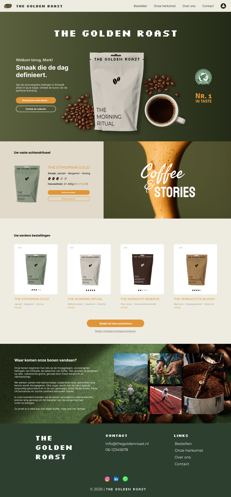
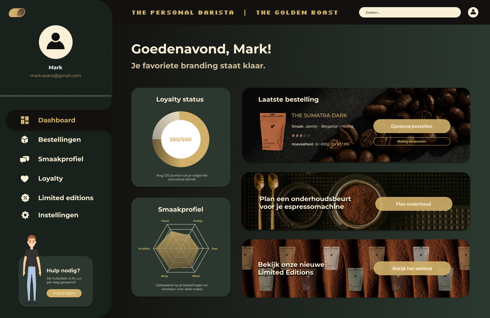

Een rustige, high-end bestelpagina voor een premium koffiebranders-boutique, ontworpen rondom de terugkerende klant. Conversie door rust in plaats van prikkels.

Voor het vak Kleur & Compositie binnen de Minor Visual Interface Design ontwierp en bouwde ik een premium e-commerce ervaring voor The Golden Roast, een fictieve high-end koffiebranders-boutique.
De opdracht: ontwerp een conversiegerichte bestelpagina gericht op een specifiek klantsegment. Mijn keuze viel op de terugkerende, routinegetrouwe koper. Niet de impulsieve shopper, maar degene die wekelijks dezelfde blend bestelt en daarin rust en snelheid zoekt.
"In plaats van een webshop vol prikkels en kortingsbonnen: een rustgevend, digitaal verlengstuk van een fysieke boutique."
Het ontwerp is volledig gebouwd rondom persona Mark (42), de 'Rituele Genieter'. Zijn behoefte: altijd dezelfde blend, minimale frictie, en geen keuzestress. De interface vertaalt dit direct naar een one-click reorder bovenaan de pagina, een subtiele loyalty-statusbalk en transparantie over de herkomst van de bonen.
Het kleurpalet — Deep Moss groen, Warm Sand en Terracotta accenten — onderstreept het premium, aardse karakter van het merk zonder te schreeuwen.
De interface bestaat uit twee lagen: een publieke homepage die het merk en de producten presenteert, en een persoonlijk dashboard voor de ingelogde klant.

Het proces begon met het vertalen van de persona-eigenschappen naar concrete interface-vereisten. Waar verlaat de vaste klant het bestelproces? Keuzestress en te veel stappen bleken de grootste drempel.
Het resultaat toont aan dat een minimalistisch design met veel witruimte en een rustig palet gebaseerd op organische texturen en aardetinten juist de conversie kan verhogen voor een specifieke doelgroep. Minder prikkels, meer focus op de herbestelling die de klant toch al wilde doen.
De custom productverpakkingen per koffiesmaak maken de premium kwaliteit van het merk direct tastbaar op het scherm.